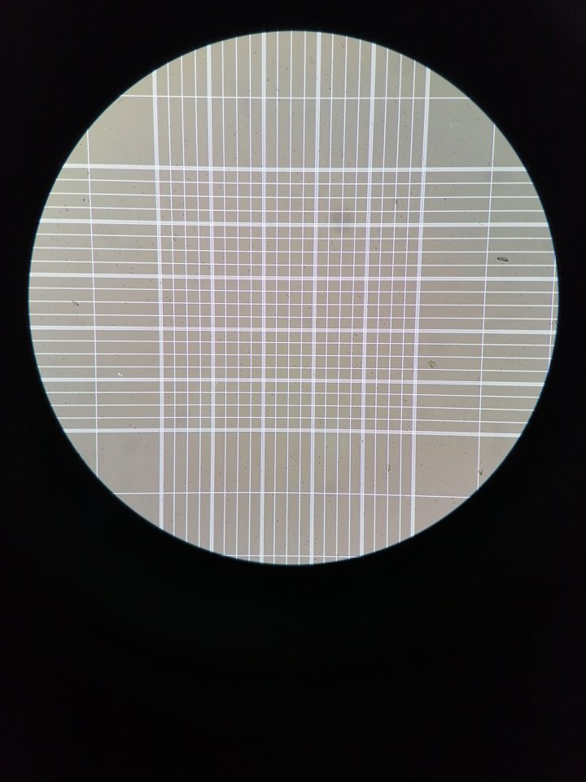

<ion-content class="backgroundd">

        <div ion-fixed class="TopText">
            <h1 class="TitleMe" style="margin-top:5px;"  >USER</h1>
            <h1 class="TitleMe2" style="margin-top:-10%"   >MANUAL</h1>
            <ion-grid class="mun">
              <ion-row>
                <ion-col col-7> Choose this icon camera for Count yeast & fungus.</ion-col>
                <ion-col col-5>  </ion-col>
              </ion-row>
              <ion-row>
                  <ion-col col-4> <ion-fab bottom center>
                      <button ion-fab>
                        <ion-icon name="camera"></ion-icon>
                      </button>
                  </ion-fab></ion-col>
                <ion-col col-7> Take photo with click button. </ion-col>
                
              </ion-row>
              <ion-row>
                <ion-col col-4> Example Picture yeast & fungus.</ion-col>
                <ion-col col-7>  </ion-col>
                
              </ion-row>
              <ion-row>
                  <ion-col col-9> Click New Take Photo Or Next  </ion-col>
                  <ion-col col-1><button ion-fab>
                      <ion-icon name="ios-arrow-dropright-outline"></ion-icon>
                    </button></ion-col>
                </ion-row>
            </ion-grid> 
        </div>
      

        
        <div  class="waterline"></div>
        
        <div class="area" >
                <ul class="circles">
                        <li></li>
                        <li></li>
                        <li></li>
                        <li></li>
                        <li></li>
                        <li></li>
                        <li></li>
                        <li></li>
                        <li></li>
                        <li></li>
                </ul>
         <!-- <ion-fab bottom right class="buttonb1">
                <button ion-fab (click)="openMenuPage()" color="light" >
                        <ion-icon  name="arrow-forward" ></ion-icon>
                </button>
        </ion-fab>                -->
        </div >
            
            
    
  </ion-content>
  
  
  
  